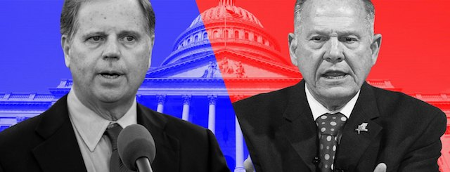

2017-12-13 08:00

Last night’s special Senate election in Alabama was balm for weary Liberals — and possibly even held a silver lining for Conservatives. With the repudiation of a xenophobic bible-thumping bigot with multiple accusations of child molestation, Alabamians can almost look themselves in the mirror this morning. Together, Democrats and Republicans breathed a sigh of relief that a man so foul would not be taking a seat in the Senate.
Tennessee GOP Senator Bob Corker called Moore’s defeat “a great night for America.” Florida GOP Senator Marco Rubio tweeted: “For their good sense people are praised, but the perverse of heart are despised. Proverbs 12:8,” But these were exceptions from a party that generally stands for everything Moore represents.
For Americans the closely-watched election had everything in it — race, sex, religion, authoritarianism. It was at once a referendum on the role of religion in government and America’s search for its soul. Although America may have dodged a bullet, the slim margin said a lot about the country’s tenuous relationship to democracy, equality and civil liberties. Ezra Klein put the narrow Democratic “win” in perspective:
“If Moore had merely been a candidate who believed Muslims shouldn’t be allowed to serve in Congress, that the laws of the United States of America should be superseded by his interpretation of the Bible, that homosexuality should be illegal, he would have won in a landslide. Even multiple credible reports that Moore serially preyed on teenage girls were barely enough to lose him the election. […] Like Donald Trump before him, Moore is proof that there is no depravity so unforgivable, no behavior so immoral, that it assures a candidate will lose his party’s voters.”
Mark Galli, the editor-in-chief of Christianity Today, in a piece yesterday, had plenty of criticism for Christian liberals but saved his harshest words for conservative Evangelicals:
“The race between Republican candidate Roy Moore and Democratic candidate Doug Jones has only put an exclamation point on a problem that has been festering for a year and a half — ever since a core of strident conservative Christians began to cheer for Donald Trump without qualification and a chorus of other believers decried that support as immoral. The Christian leaders who have excused, ignored, or justified his unscrupulous behavior and his indecent rhetoric have only given credence to their critics who accuse them of hypocrisy. Meanwhile the easy willingness of moderate and progressive Christians to cast aspersions on their conservative brothers and sisters has made many wonder about our claim that Jesus Christ can bring diverse people together as no other can.”
Aspersions aside, the facts are these: White Alabamians, in their perversity, overwhelmingly chose a racist multiply-accused of pedophilia who doesn’t really believe in the U.S. Constitution over a Democrat who successfully prosecuted the Klan. And it was black Alabamians — black women, especially — whom the nation can thank for their display of the “good sense” mentioned in Proverbs 12:8.
The Alabama election should dispel any notion that Democrats must abandon so-called “identity politics” and throw their efforts instead into chasing “angry white voters.” Angry white voters don’t vote for them. When Chuck Schumer, Nancy Pelosi, Elizabeth Warren, and other Democratic luminaries announced their “Better Deal” in Berryville, Virginia, it was a harebrained effort to appeal to white populism. But the Democratic Party is a party of diversity, the working class is much broader than the DNC seems to understand — and that’s where the party’s power must come from. Last night black Alabamians wanted the DNC to remember that.
Before the election, when asked if black Alabama voters would turn out in sufficient numbers, Birmingham City Councillor Sheila Tyson replied, “The problem isn’t going to be with the black voters. If Jones doesn’t win, it’s not our problem.” But black voters delivered. After the votes were in, Democratic strategist Symone D. Sanders told a Newsweek reporter, “Doug Jones would not have won today without the turnout we saw from African-American voters. […] Black women have been absolutely clear in their support for Democratic policies and Democratic candidates. It’s high time for Democrats … to invest in that effort.”
Which was a polite way of telling the Democratic Party to stop focusing on big donors, and losing battles with racists, to democratize and start showing some respect for voters of color who just saved their asses.
But bringing real democracy to the Democratic Party won’t happen easily. In the Monday New York Times Julia Azari and Seth Masket penned an opinion piece, “Is the Democratic Party Becoming Too Democratic?” In it they object to the DNC Unity Commission’s moves to reduce the number of superdelegates and open up the party to [shudder] Sanders supporters. They write that “part of the problem for parties is our insistence that they be run democratically. That turns out not to be a very realistic concept […] party leaders will always have vastly more information about candidates — their strengths and flaws, their ability to govern and work with Congress, their backing among various interest groups and coalitions — than voters and caucusgoers do. That information is useful, even vital, to the task of picking a good nominee.”
Richard Eskow in his dissection, “Democrats Need More Democracy, Not Less” does a great job of refuting Azari and Masket’s argument, pointing out that — repeatedly — party insiders have either championed candidates who were doomed the moment their names appeared on the ballot — or sabotaged candidates who were objectively more “realistic” than the poor choices insiders made. The 2016 Presidential election was no exception.
If the Alabama election teaches us anything, it’s that the Republican Party has completely lost whatever soul it ever had. Democrats, on the other hand, still have theirs. It’s right underfoot, but they’re knocking around in the dark trying to figure out where the hell they left it.